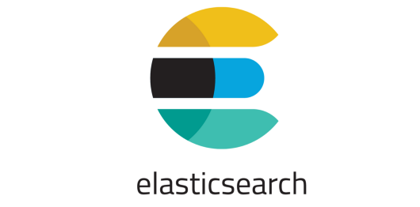

pygeoapi 
API for geospatial data
@tomkralidis @JMendesDeJesus @normanbarker @perrygeo @justb4 @pvgenuchten
version: June 25, 2019
I. In the beginning there was... WFS v1/v2
Characteristics
- Key Value Parameters (KVP) or XML encodings
- Requests using HTTP GET, HTTP POST and SOAP
- Responses as XML (GML)
- Error handling ExceptionReport in response
Issues with WFS v1/2
- Highly verbose
- Highly dependent on XML technologies
- Verbose documentation (WFS 2.0 has 239 pages)
- OGC document from 2010
- No unique urls for features
- Features hard to index by search engine
- "In-band" error reporting
II. A New Era is Upon Us
RESTFul APIs
- REST is becoming a MUST
- Standards (-development) should be more developer-friendly
- OGC Standards are "old-fashioned"
What is REST ???
- REpresentational State Transfer (REST)
- Uses HTTP's verbs (GET/POST/DELETE)
- Uses HTTP's codes (200, 404, 201, etc)
- Uses URI to identify resources
- Content negotiation (ask for media-type)
- Stateless
- Very popular among developers
- Easy to understand
- JSON is king in REST webservices
- No rigid standards (good or bad)
IV. OpenAPI / Swagger
V. The WFS 3.0 Spec
NB: renamed as: "OGC API - Features"
OGC WFS3 (Features) Spec
- Lightweight
- OpenAPI/Swagger
- GeoJSON
- Maintained in GitHub
Example
/collections /collections/countries /collections/countries/items /collections/countries/items/The_Netherlands
Data is structured and each Feature is a REST representation
OGC API - Features
Links
VI. pygeoapi
pygeoapi
Part of the amazing Geopython community in GitHub
pygeoapi
- More than just a WFS v3 implementation
- Access geospatial data via OGC APIs
- OSGeo Community Project (in Motion)
- Powered (default) by:
pygeoapi - technical
- Flask with REST support
- OpenAPI endpoint automatically generated
- Data provider agnostic (plugins)
- Docker Images

Data Providers
|  |  |
 |
|
| Elasticsearch | CSV | Spatialite* | GeoJSON* |
* also via GDAL-OGR Provider
Data Providers - Cont
| GDAL-OGR |
Data Providers - GDAL-OGR
- via OGR-Python bindings
- in theory ~100 Vector Formats!
- thus: WFS2, GeoPackage, Shapefile, GeoJSON, PostGIS, ...
- paging, reprojection, bbox/attr/id-query, auth
- ==> unlock existing WFS2s!
Demo
pygeoapi - Roadmap
- More data providers
- Content negotiation (e.g. Response as GeoPackage, GML,...)
- Advanced filters (CQL)
- More OGC APIs: Maps, Tiles, Coverages, Processes